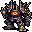
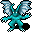

鉄塊の矢 Iron Shot
英語版 CrawlWiki の記事「Iron Shot」(0.31 向け、2026-05-29 版)の翻訳です。原文の著者は編集履歴をご覧ください。
この記事は 0.31 の時点の内容で、最新の 0.34 とは違うところがあるかもしれません。
| 大きく重い金属の砲弾を投げつける。 |
| 呪文の詳細 | |
|---|---|
| ダメージの式 | 9d(1.66+Power/12) |
| 最大ダメージ | 9d19 |
| 最大威力 | 200 |
| 射程 | 4 |
| 狙い方 | ビーム |
| 命中 | 7+Power/15 |
| 特殊 | なし |
鉄塊の矢はモンスター専用の呪文で、1 体の相手に金属の槍を撃ち出す。射程はそれほど長くなく、盾で防いだり身をかわしたりもできるが、当たれば耐性では軽減できない大きなダメージを受ける。
鉄塊の矢を唱える敵は次のとおり。
- z
 太古の王者(ダメージ 3d26)
太古の王者(ダメージ 3d26) - L
 ボリス(ダメージ 3d37)
ボリス(ダメージ 3d37) - &
 セレボブ(ダメージ 3d36)
セレボブ(ダメージ 3d36) - e
 闇エルフの破壊者(ダメージ 3d28)
闇エルフの破壊者(ダメージ 3d28) - &
 ディスペータ(ダメージ 3d29)
ディスペータ(ダメージ 3d29) - q
 ドラコニアンの破壊者(ダメージ 3d29)
ドラコニアンの破壊者(ダメージ 3d29) - @
 フランセス(ダメージ 3d26)
フランセス(ダメージ 3d26) - 1

地獄の番人(ダメージ 3d33) - E
 鉄の精霊(ダメージ 3d24)
鉄の精霊(ダメージ 3d24) - C
 鉄の巨人(ダメージ 3d32)
鉄の巨人(ダメージ 3d32) - g
 ジョーグルン(ダメージ 3d28)
ジョーグルン(ダメージ 3d28) - I
 ロクサーヌ(ダメージ 3d26)
ロクサーヌ(ダメージ 3d26) - D
.png) 地獄のサーペント(ディース)(ダメージ 3d30)
地獄のサーペント(ディース)(ダメージ 3d30) - 3

ヱノクシヌル(ダメージ 3d16)


次の敵は、呪文セットによっては鉄塊の矢を唱えることがある。
- &
 パンデモニウムの君主(5.2% の確率)
パンデモニウムの君主(5.2% の確率)